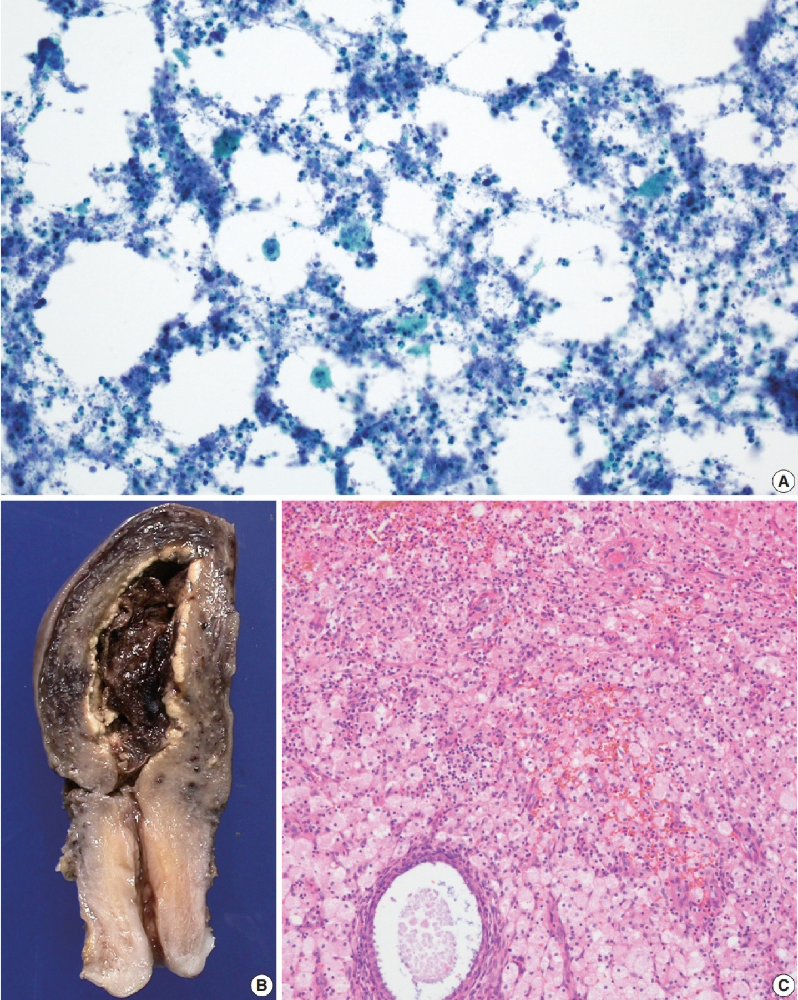

Página 2 · Etiologia e fatores de risco
Por que ESSA paciente foi parar na endometrite
Por que justamente ela — desnutrida, anêmica, muitos toques, cesárea — foi parar na endometrite?
O que é endometrite
Endometrite é a infecção/inflamação do endométrio — a camada interna do útero. É o diagnóstico que a nossa paciente está construindo desde o exame: útero doloroso, colo aberto, lóquios infectados.
A campeã da morbidade febril
A endometrite é, disparada, a principal morbidade febril puerperal. Quando você pensa "febre genital no puerpério", a primeira hipótese, de longe, é endometrite. As outras infecções genitais existem, mas nenhuma chega perto da frequência dela.
Por que polimicrobiana: a ascensão
A etiologia é tipicamente polimicrobiana: não é um único germe, é uma mistura. E o mecanismo explica tudo — os microrganismos ascendem do canal vaginal, sobem pelo colo aberto do puerpério e colonizam o endométrio. Essa rota de ascensão é o que torna a infecção mista (flora vaginal inteira sobe junto) e é o que vai ditar a escolha do antibiótico lá na frente.
Interativo: toque nas estações da subida.
A rota que a foto não mostra: a flora do canal vaginal sobe pelo colo aberto do puerpério e coloniza o endométrio. É a subida da flora inteira que torna a infecção mista — e é por isso que o esquema antibiótico precisa ser de amplo espectro.O maior fator: a cesárea
O fator de risco mais pesado é a cesariana. A lógica é anatômica e crua: abrir o útero expõe o endométrio. Você rompe a barreira que separava a cavidade do campo cirúrgico. Por isso o risco de endometrite após cesárea é muito maior do que após parto vaginal — não é um detalhe, é uma diferença de ordem de grandeza.

Na cesárea, a histerotomia atravessa o miométrio e abre a cavidade: o endométrio deixa de ser superfície protegida e passa a contatar sangue, manipulação cirúrgica, tecido desvitalizado e flora ascendente. No painel de histopatologia, o estroma endometrial aparece tomado por células inflamatórias — o correlato do que a clínica chama endometrite. Não é foto intraoperatória: é o correlato histológico aberto do achado.
Na JM et al., J Pathol Transl Med 2020, DOI 10.4132/jptm.2020.08.18 — CC BY-NC 4.0 · página de origem
A profilaxia que só a cesárea recebe
Justamente por esse risco, na cesariana faz-se antibiótico profilático na indução anestésica — uma dose antes de abrir, para reduzir a infecção. No parto vaginal, não é necessário essa profilaxia de rotina. Esse contraste cai em prova: profilaxia antibiótica no parto é regra da cesárea, e o momento é a indução anestésica.
Bolsa rota
Outro fator de risco é a bolsa rota / ruptura prematura de membranas ovulares (RPMO). Quando as membranas se rompem, a barreira estéril se perde e a via de ascensão fica aberta por mais tempo — mais chance de contaminação subir.
Trabalho de parto arrastado
O trabalho de parto prolongado/arrastado também aumenta o risco — e ainda mais quando, no final, ele vira cesariana. Aí os riscos se somam: horas de trabalho de parto com bolsa rota e muitos toques, e depois a abertura cirúrgica do útero. É exatamente a história da nossa paciente.
Os modificáveis do pré-natal: anemia e desnutrição
Anemia e desnutrição são fatores de risco modificáveis — corrigíveis já no pré-natal. A paciente do caso é anêmica e desnutrida; parte do risco dela era evitável meses antes, com um pré-natal que corrigisse esses dois pontos.
Os toques vaginais
O número aumentado de toques vaginais durante o parto é outro fator modificável. Cada toque leva flora para cima. Reduzível com disciplina assistencial — menos toques, menos ascensão. A nossa paciente teve múltiplos toques por dúvida sobre a passagem do bebê; era outro ponto acionável.
O organizador: modificáveis × não-modificáveis ⚠️
O conceito que amarra a página: os fatores de risco se dividem em dois grupos. Modificáveis — anemia, desnutrição, número de toques vaginais, e a profilaxia antibiótica na cesárea (algo que você faz para reduzir risco). Não-modificáveis / inerentes — cesárea, bolsa rota, trabalho de parto prolongado (situações que se impõem). O valor prático dessa divisão é que, em vários pontos, dá para intervir — e a prova adora perguntar qual fator é evitável.
Modificáveis — dá para intervir
- Anemia (corrigir no pré-natal)
- Desnutrição (corrigir no pré-natal)
- Número de toques vaginais (disciplina assistencial)
- Antibiótico profilático na cesárea (o que você faz)
Não-modificáveis / inerentes
- Cesariana (uma vez indicada, aconteceu)
- Bolsa rota / RPMO
- Trabalho de parto prolongado
Quiz — fixação
Sobre a etiologia e os fatores de risco da endometrite puerperal, assinale a incorreta:
- C) é a incorreta pedida. A profilaxia antibiótica de rotina é da cesárea (na indução anestésica) — no parto vaginal não se faz de rotina. Generalizar a profilaxia para todo parto apaga justamente o contraste que a banca cobra.
- A) Correta. Polimicrobiana por ascensão é o mecanismo-padrão — negá-lo seria negar a base fisiopatológica.
- B) Correta. A cesárea expõe o endométrio e multiplica o risco frente ao parto vaginal; é o fator mais pesado.
- D) Correta. Anemia e desnutrição são o par modificável clássico do pré-natal — "inerente à paciente" não é o mesmo que "impossível de corrigir".
Classifique cada fator como (M) modificável ou (N) não-modificável, na ordem: número de toques vaginais · bolsa rota · desnutrição · trabalho de parto prolongado. A sequência correta é:
- A) M – N – M – N. Toques vaginais (M): o modificável mais assistencial, depende da disciplina de quem conduz. Bolsa rota (N): uma vez rompida, o fator se instalou. Desnutrição (M): corrigível no pré-natal. Trabalho de parto prolongado (N): impõe-se pela evolução — não é alavanca voluntária.
- B) Erra a bolsa rota: marca M, confundindo "prevenir infecção após bolsa rota" com "modificar a bolsa rota em si".
- C) Inverte os dois primeiros: os toques são o modificável clássico, não um fator inerente.
- D) Marca a desnutrição como N — mas ela é o modificável de pré-natal por excelência.
Sabendo por que ela adoeceu, falta cravar o diagnóstico à beira do leito — os três sinais no útero que fecham endometrite e o que os lóquios entregam de graça.